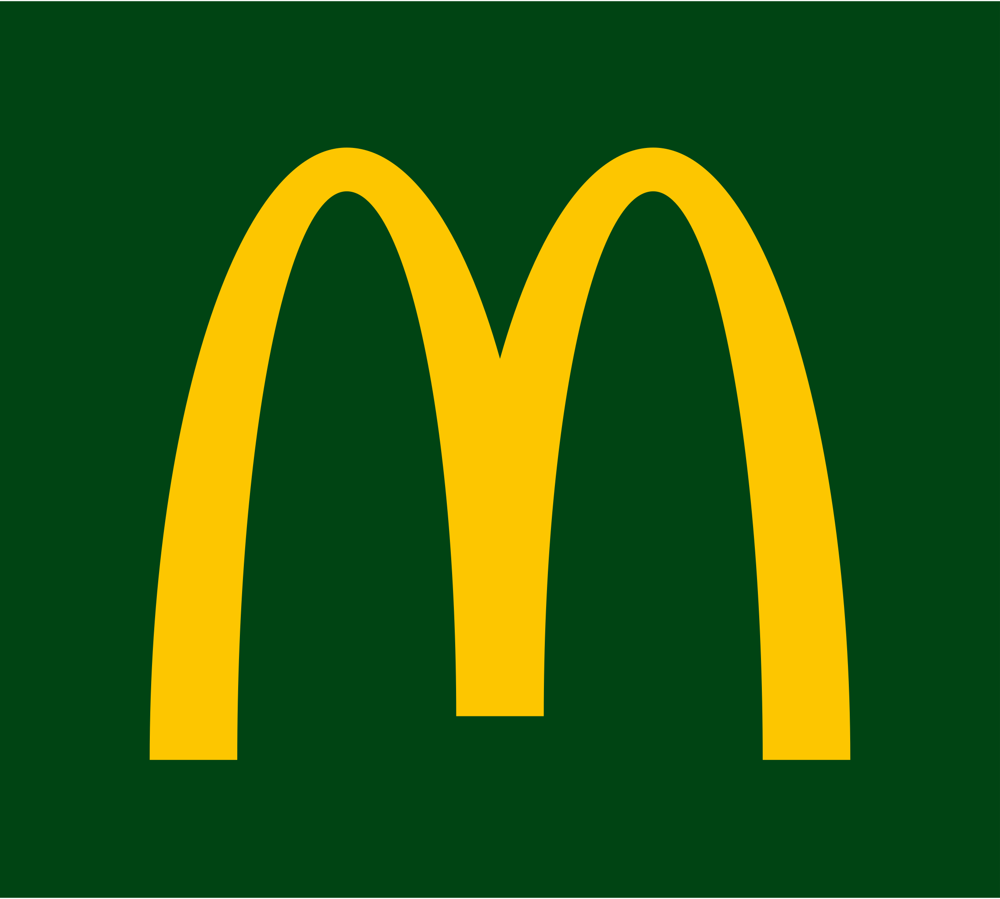

EDUCATION
Master of Science in Engineering "Diplôme d'Ingénieur" - IMT Atlantique (Ex Télécom Bretagne)
August 2022 - In progress (3 years program)
The first year is a multidisciplinary core curriculum: scientific training, engineering projects, ecological and societal transformations, computer science and networks, economics, sociology and management.
 Bachelor of Science in Fundamental Physics- Paris Saclay University
September 2020 - June 2022 (2 years)
The first year is a multidisciplinary core curriculum: scientific training, engineering projects, ecological and societal transformations, computer science and networks, economics, sociology and management.
1st year of Bachelor's degree in Physics - Grenoble Alpes University
September 2019 - June 2020 (1 year)
The first year is a multidisciplinary core curriculum: scientific training, engineering projects, ecological and societal transformations, computer science and networks, economics, sociology and management.
High School degree in Mathematics - Royal Preparatory College to Aeronautical Techniques
September 2017 - June 2019 (2 year)
The first year is a multidisciplinary core curriculum: scientific training, engineering projects, ecological and societal transformations, computer science and networks, economics, sociology and management.
PROFESSIONAL EXPERIENCES
 Research Internship - Institut des Sciences Moléculaires d'Orsay
Research Internship - Institut des Sciences Moléculaires d'Orsay
June 2022 - July 2022 (2 months full time)
The first year is a multidisciplinary core curriculum: scientific training, engineering projects, ecological and societal transformations, computer science and networks, economics, sociology and management.
transformations, computer science and networks, economics, sociology and management.
Crew Member - McDonald's France (Villebon)
September 2021 - December 2021 (4 months part time job)
The first year is a multidisciplinary core curriculum: scientific training, engineering projects, ecological and societal transformations, computer science and networks, economics, sociology and management.
ASSOCIATIVE EXPERIENCES
Secretary-general - The International Office (BDI) of IMT Atlantique
January 2023 - In progress (1 year mandate)
The first year is a multidisciplinary core curriculum: scientific training, engineering projects, ecological and societal transformations, computer science and networks, economics, sociology and management.
transformations, computer science and networks, economics, sociology and management.
Mentor - Association de la Fondation Etudiante pour la Ville (AFEV)
Since January 2023
The first year is a multidisciplinary core curriculum: scientific training, engineering projects, ecological and societal transformations, computer science and networks, economics, sociology and management.
transformations, computer science and networks, economics, sociology and management.
Educational Tutor - Support for young isolated migrants (ADJIM)
Since January 2023
The first year is a multidisciplinary core curriculum: scientific training, engineering projects, ecological and societal transformations, computer science and networks, economics, sociology and management.
transformations, computer science and networks, economics, sociology and management.
Volunteer - AlQalam Association for Education and Culture
From 2014 to 2017
The first year is a multidisciplinary core curriculum: scientific training, engineering projects, ecological and societal transformations, computer science and networks, economics, sociology and management.
transformations, computer science and networks, economics, sociology and management.
CERTIFICATIONS
MOOC introduction to cybersecurity - ANSSI
The first year is a multidisciplinary core curriculum: scientific training, engineering projects, ecological and societal transformations, computer science and networks, economics, sociology and management.
 Fundamentals of finance & introduction to corporate finance - Wharton online
Fundamentals of finance & introduction to corporate finance - Wharton online
The first year is a multidisciplinary core curriculum: scientific training, engineering projects, ecological and societal transformations, computer science and networks, economics, sociology and management.
 IBM Cybersecurity IT Fundamentals Specialization
IBM Cybersecurity IT Fundamentals Specialization
The first year is a multidisciplinary core curriculum: scientific training, engineering projects, ecological and societal transformations, computer science and networks, economics, sociology and management.
 MOOC VIGIPIRATE Alert System - SGDSN
MOOC VIGIPIRATE Alert System - SGDSN
The first year is a multidisciplinary core curriculum: scientific training, engineering projects, ecological and societal transformations, computer science and networks, economics, sociology and management.
 Training on the protection of national defense secrets
Training on the protection of national defense secrets
The first year is a multidisciplinary core curriculum: scientific training, engineering projects, ecological and societal transformations, computer science and networks, economics, sociology and management.
Training on the protection of national defense secrets
The first year is a multidisciplinary core curriculum: scientific training, engineering projects, ecological and societal transformations, computer science and networks, economics, sociology and management.
Projects
Number |
Title |
Key words |
1 |
Tower of Hanoi |
Algorithmics, Python, Turtle |
2 |
PCA applied to the compression of financial data |
MATLAB, Data Science |
3 |
Google PageRank algorithm applied to business management |
MATLAB, Markov chain, Stochastic modelling |
4 |
Crank Nicolson method applied to quantum mechanics |
C,C++,Pyhon,MATLAB,discretization, computational physics, Schrödinger equation |
5 |
Study of the friction coefficients of different materials on a wooden inclined plane |
Arduino, Newton equations |
6 |
Fitting GIFAD experimentl data to theoritical models |
MATLAB, Python, diffraction, experimental physics |
7 |
Approximative solution of TSP using MAX MIN Ant System Algorithm |
Discrete mathematics, Probability, Statistics, optimization, Python, multi-processing, multi-threading, game theory |
8 |
Social Network for reviewing books and movies |
Java, oriented object programming |